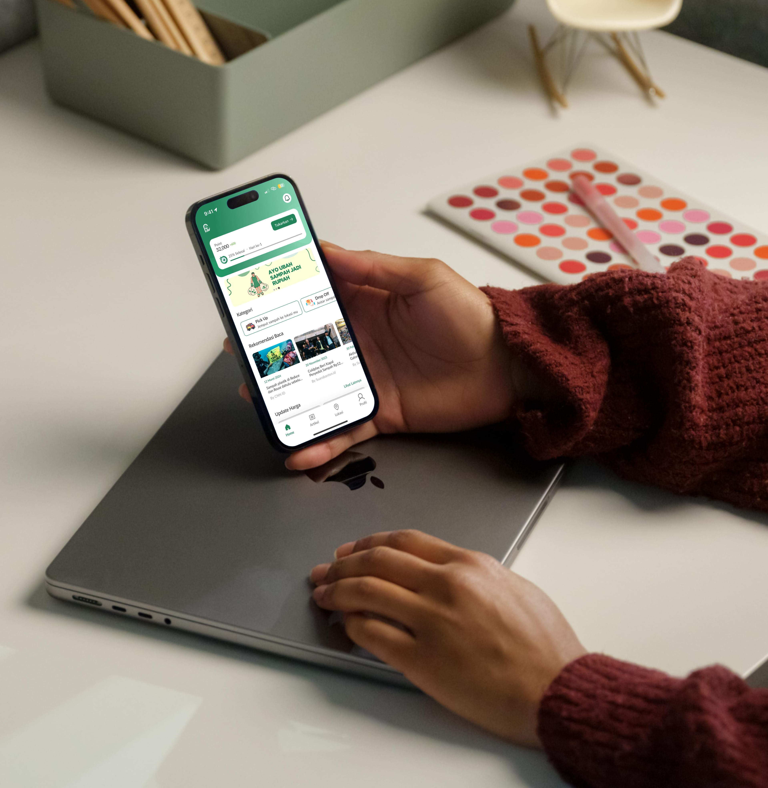
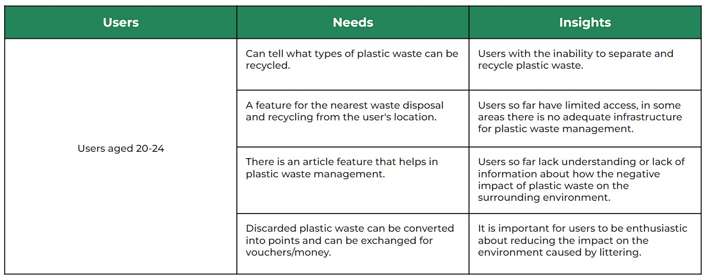
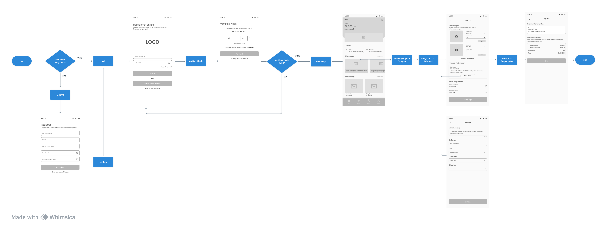
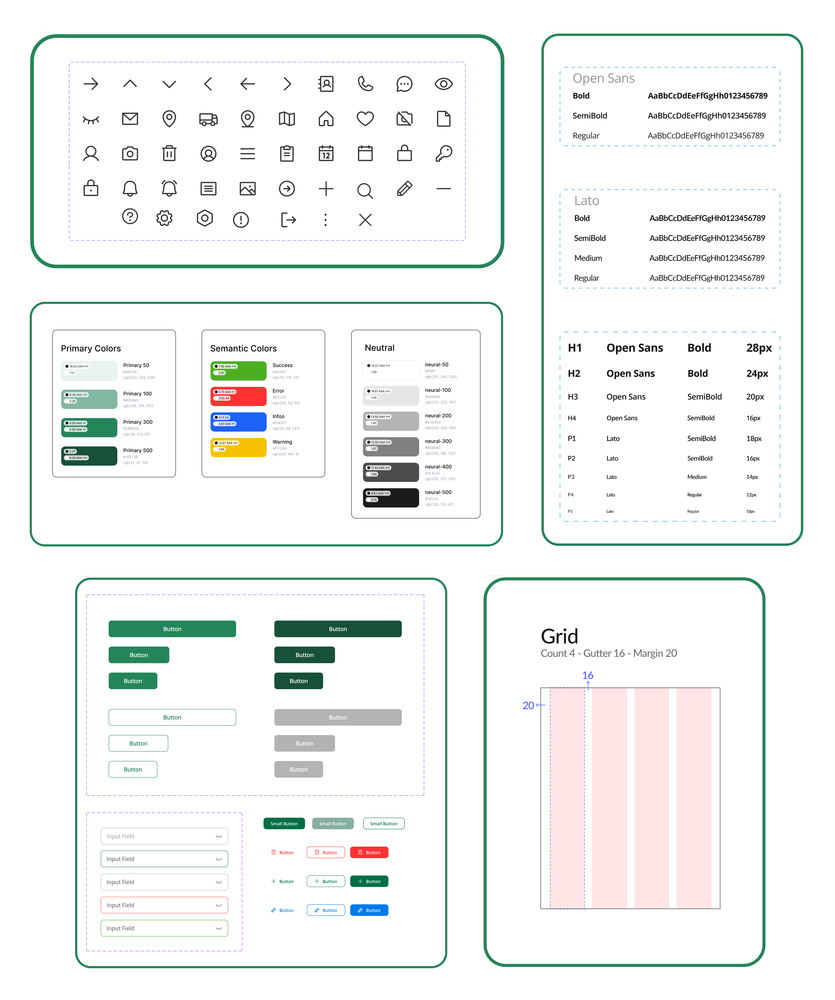

Pawcycle
Overview
This was a project when I joined one of the bootcamps partnered with KOMINFO. here I took the topic "Help users to recycle and reduce plastic pollution".
According to the data, Indonesia is currently ranked as the 5th largest contributor of waste in the world, which is dominated by plastic waste. In an effort to maintain the sustainability of a healthy environment, the importance of an individual's awareness to reduce the negative impact of plastic waste, then from this Pawcycle application can help in reducing and recycling plastic waste.
My Role
UI Design, UX Research
Tools
Figma, Whimsical, Google Workspace
Timeline
5 Day
How can users be helped from the problem of
plastic waste in their neighborhood?
Reseacrh Plan
Reseacrh Objective
- What features are needed to reduce and recycle plastic waste?
- Knowing what problems are experienced in managing waste?

Problem
- Lack of understanding of the negative impact of plastic waste on the environment.
- Inability to separate and recycle plastic waste.
- Limited access, in some areas there is no adequate infrastructure for plastic waste management.
- Lack of eco-friendly product options available in the local market.
Research Hypothesis
- We believe, the existence of a platform to recycle plastic waste, Because can increase individual awareness in protecting the environment.
- We Believe by providing information/articles to users can increase literacy about the impact of waste, Because it can reduce dependence on the use of plastic in everyday life.
Reseacrh Method & Result
Using the Interview method to find out how the user journey in using the waste recycling application and collect various insights from users who are experienced in recycling waste and users who are not experienced.


User Persona

Point of View
How Might We
Formulate questions to look at the problem from different angles and find solutions that may not have been thought of before. These questions can be the starting point for conducting further user research or collecting relevant data to support the design process.
- How can we display information according to their needs or concerns?
- How can we utilize push notifications and reminders to encourage users to recycle regularly and stay engaged with the app?
- How can we incentivize users to consistently recycle plastic waste?
- How can we facilitate the collection, sorting and processing of plastic waste more efficiently?
- How can we include educational content and quizzes in the app to increase user awareness and knowledge about the environmental impact of plastic waste?
- How can we encourage users to adopt the habit of reusing and recycling plastic products?
User Story
explain the features or benefits of a product from the perspective of the user, aka the party who will use the product, thus facilitating the design process.
"As a busy user, I would like to have the option of scheduling garbage pickup according to my schedule and preferences, so that I can plan the pick-up when it is most convenient for me"

Wireflows
Visualize how users will interact with a product or service through wireflow, a combination of wireframe and flowchart. With this, I have a better understanding of the user flow and overall layout of the user interface.
Design System
Result


Thank you
Send a message immediately, I'm sure we can create precious moments together
Send email to Zainudin2001@gmail.com